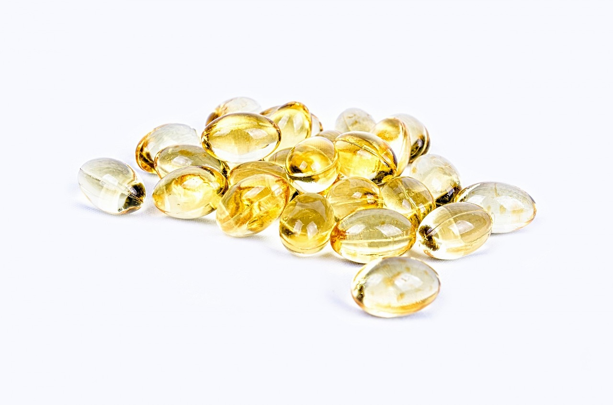

Vitamina D
INFOBAE, 14 Nov, 2023
La vitamina D juega un papel crucial en el sistema inmunológico -de defensa del organismo- y puede combatir la inflamación. Y esta propiedad se volvió de suma importancia en la lucha del cuerpo contra el coronavirus. A partir de años de investigar este compuesto, se sabe que la falta de vitamina D afecta tanto al sistema inmune innato como al adaptativo e incorporarla puede tener un papel en la protección contra las infecciones respiratorias. Pequeños estudios anteriores han sugerido una relación entre la deficiencia de vitamina D y el riesgo de infecciones y mortalidad por COVID-19, pero los estudios se basaron principalmente en tendencias geográficas en el estado de vitamina D y las tasas de infección por COVID-19 en lugar de pacientes individuales.
Una nueva investigación determinó que obtener vitamina D está relacionado con un menor riesgo de sufrir infecciones graves por coronavirus y padecer síntomas graves como confusión, pérdida del conocimiento, dificultad para respirar y muerte. Las personas que incorporan suficiente vitamina D tienen un riesgo 52 por ciento menor de morir de COVID-19 que aquellos que tienen deficiencia de la "vitamina del sol", revelaron. Se trata de un estudio llevado adelante por la Facultad de Medicina de la Universidad de Boston de los Estados Unidos, en donde los científicos se preguntaron qué hace que una persona sea más propensa a contraer COVID-19.
El doctor Sundeep Khosla, jefe de Endocrinología de Mayo Clinic en Rochester, Minnesota, explicó a Infobae que la vitamina D es un nutriente fundamental que el cuerpo requiere sobre todo para tener huesos fuertes. La razón es que la vitamina D ayuda al cuerpo a absorber y mantener un nivel adecuado de otros dos nutrientes importantes para la salud ósea: el calcio y el fosfato.
La mayor parte de la vitamina D se obtiene de la luz solar. Cuando los rayos ultravioletas (UV) tocan la piel, especialmente a mediodía, se inicia la producción de vitamina D. En general, los adultos deben consumir 600 unidades internacionales de vitamina D a diario. Eso aumenta a 800 unidades internacionales diarias en las personas mayores de 70 años.
La vitamina D es única porque se puede producir en la piel a partir de la exposición a la luz solar. Existe en dos formas: se obtiene de la irradiación UV y de algunos alimentos. La luz UVB del sol incide en la piel y los seres humanos sintetizan vitamina D3, por lo que es la forma más “natural”. Los seres humanos no producen vitamina D2, por lo que es necesario incorporarla al organismo.
Pero ¿cómo incorporar la vitamina D de forma natural? Además de tomar sol de 5 a 10 minutos por día, algunos de los alimentos que se pueden ingerir para obtener esta vitamina son el pescado (salmón, bacalao, sardinas), los lácteos y cereales, entre otros. La ingesta de estas comidas forman un compuesto denominado colecalciferol que se transfiere al hígado para convertirse en vitamina D activa. De aquí deriva la relación entre la carencia de vitamina D y un aumento de grasa corporal, ya que la falta de esta vitamina cambia la forma de procesar los nutrientes. En vez de utilizar los alimentos como energía, la carencia de vitamina D activa una enzima que almacena la comida en células grasas, generando -en consecuencia- un aumento de peso.
Volver